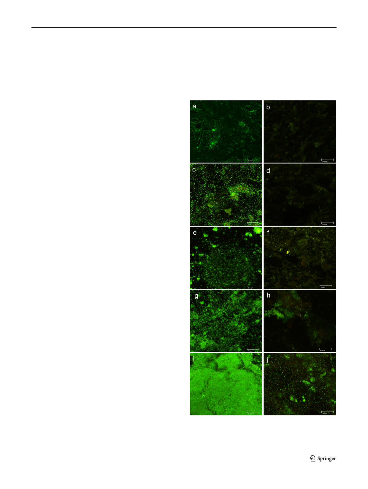

Braz J Microbiol (2021) 52:619–625
Biofilm morphology using SEM
To identify the morphology of the S. aureus biofilm on the PE
specimens, the surfaces were observed by SEM (Jeol, JSM-
7401F) at ×800 and ×1000 magnifications and images were ob-
tained in 50- to 100-μm scale, with voltage operation of 15 kV.
Statistical analysis
The mean and standard deviations of the UAF (arbitrary fluo-
rescence units) of the 2 study groups were calculated at 6, 12,
24, 48, and 72 h. The S. aureus biofilm formation of the spec-
imens coated or uncoated within each formation period (6 vs 12
vs 24 vs 48 vs 72) was analyzed by the nonparametric Kruskal–
Wallis test, and a significance level of p ≤ 0.05 was used.
621
group, with the number of nonviable cells with red fluores-
cence considerably increasing, referring to a damaged bacte-
rial membrane (Fig. 1h).
The last period was evaluated at 72 h in the experimental
group. The mass of the biofilm was observed as uniform in the
majority of the surface of the PE specimens, leaving only
some cracks without their being invaded as yet. Along with
Results
AuNP coating effect on the biofilm formation of
S. aureus with CLSM
At 6-h intervals in the control group, a scarce biofilm was
formed on the surface and was distributed sparingly with de-
fined coconut forms and a thin uniform base layer. As the bac-
teria that were observed in isolation moved away (Fig. 1a) in the
experimental group with the surfaces covered with AuNP, it was
observed that there was less biofilm formation (Fig. 1b).
At 12 h of incubation in the control group, the biofilm
increased; a uniform base layer of medium thickness was ob-
served. As the bacteria moved away from the base, they were
still isolated and separated, corresponding to a bacterial settle-
ment phase-in process (Fig. 1c). On the other hand, in the
experimental group, there was still no development of the
biofilm; some isolated coccoid forms were observed (Fig. 2d).
At 24 h of the evaluation period, the base layer was uniform
and with bacterial clusters; the thickness of the biofilm was
greater. Outside of the base, medium-density conglomerates
were distributed and nonviable cells were observed on the sur-
face of the PE discs with conglomerates of developing bacteria
(Fig. 1e). In the case of the experimental group specimens, the
distributed biofilm was increased on the surface of the coated
PE, observing some nonviable cells on the surface (Fig. 1f).
At 48 h and 72 h in the control group, biofilm formation
continued to increase, with a higher fluorescent green intensi-
ty, and no viable cells were observed. At the 48-h period, a
uniform base layer was observed; along with the extension of
this, conglomerates in the form of dense granules were ob-
served toward the surface. The latter were distributed in the
medium-density cluster and, in cluster structures with
intertwined nonviable bacteria, an increase was notably ob-
served (Fig. 1g). In contrast, for the 48-h time period, a de-
crease in viable biofilm cells was observed in the experimental
Fig. 1 Images of the formation and growth of S. aureus biofilm on the
uncoated PE surfaces with CLSM at 6 h (a), 12 h (c), 24 h (e), 48 h (g),
and 72 h (i) and on the coated surface with AuNPs at 6 h (b), 12 h (d),
24 h (f), 48 h (h), and 72 h (j)